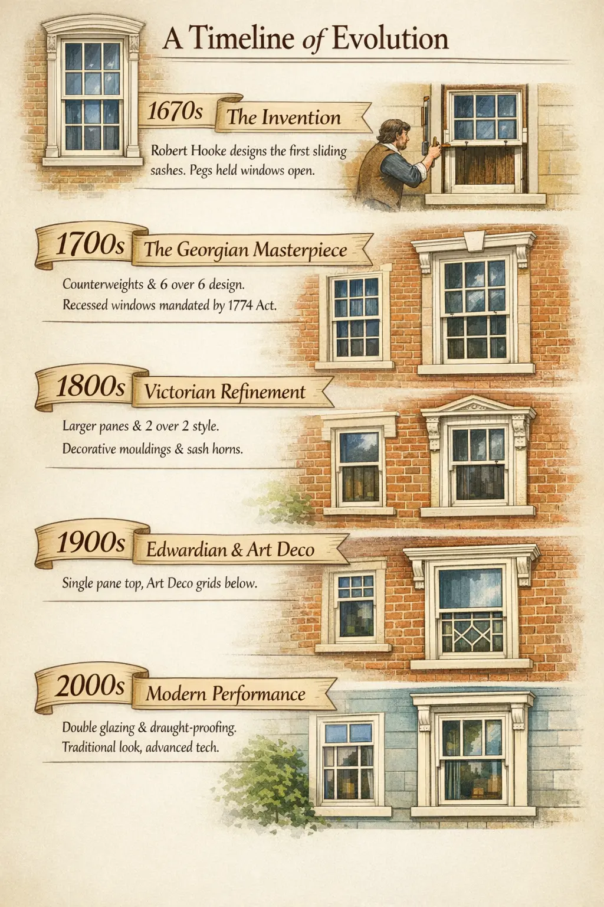
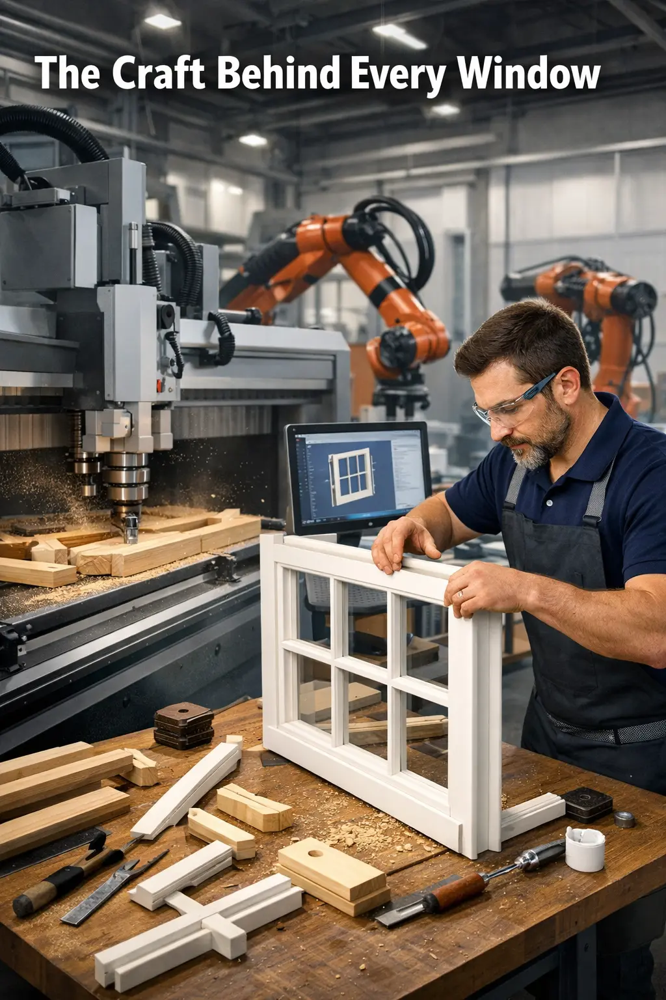

Learn · Understand · Appreciate
The Fascinating History of Sash Windows
A simple British invention that solved problems no other window could. Discover why the sash window — 350 years old — remains the most intelligent window ever engineered.
Where It All Began
The sash window is one of the most ingenious pieces of engineering in architectural history. It appeared in England in the late 1600s, and within a century it had become the defining feature of British homes — from modest terraces to grand Georgian townhouses.
The credit for the sliding sash mechanism is widely attributed to Robert Hooke, the English polymath who designed a window around 1670 featuring two vertically sliding panels that could be opened independently. Before this, windows were either fixed or hinged casements — functional, but limited in ventilation control.
A Timeline of Evolution

1670s
The Invention
Robert Hooke designs the first sliding sash mechanism. Early examples appear in English country houses and royal residences. The original windows used pegs to hold sashes open — counterweights came later.
1700s
The Georgian Masterpiece
Sash windows become standard in Georgian architecture. The counterweight system using lead weights and pulleys is perfected. The classic six-over-six glazing bar pattern becomes iconic. The Building Act of 1774 requires windows to be recessed into the wall, giving birth to the elegant reveal detail we still see today.
1800s
Victorian Refinement
Larger glass panes become available, reducing the need for multiple glazing bars. The two-over-two pattern emerges. Sash horns are introduced to strengthen meeting rails. Decorative mouldings reach their peak — lamb's tongue, ovolo, and ogee profiles become standard. Every London terrace gets sash windows.
1900s
Edwardian & Art Deco
Edwardian homes favour wider windows with a single top pane and multi-pane lower sash. Art Deco brings geometric glazing bar patterns. The sash window adapts to every architectural movement while keeping its core mechanism unchanged.
2000s
Modern Performance
Slimline double glazing allows traditional proportions with modern thermal performance. Draught-proofing systems eliminate air leakage. Engineered timber and Accoya resist rot for decades. Microporous paint systems last 10+ years. The sash window is reborn — same beauty, modern engineering.
How Sash Windows Actually Work
The mechanism is deceptively straightforward. Two panels — called sashes — slide vertically within a box frame. Each sash is connected to counterweights hidden inside the frame via cords that run over pulleys at the top. The weights exactly balance the sash, so it stays wherever you leave it — no catches, no springs, just physics.
01
The Box Frame
The outer frame contains two hidden compartments (one each side) that house the lead counterweights. These compartments are accessed via removable pocket pieces in the jambs — essential for maintenance and cord replacement.
02
Lead Counterweights
Cast lead weights hang inside the box frame, connected to each sash by cords. The weights are calculated to precisely match the weight of each sash — this is why a properly balanced sash window stays open at any position without assistance.
03
Pulleys & Cords
Brass or nylon pulleys sit at the top of each jamb. Cotton sash cords (or modern synthetic equivalents) connect each sash to its counterweights. The cord runs up from the sash, over the pulley, and down to the weight. Simple, elegant, and effective for centuries.
04
Staff & Parting Beads
The staff bead holds the inner sash in place on the interior side. The parting bead separates the two sashes, creating two independent tracks. Both are removable — allowing easy access for maintenance, glass replacement, or draught-proofing.
The Ventilation No One Talks About
You already know that a sash window ventilates from top and bottom simultaneously. But what most people don't realise is how deeply this feature shaped British domestic life — and why modern building regulations still struggle to replicate it.
In a traditional British home, the fireplace was the engine of the house. It heated, it cooked, it dried clothes. But a fire consumes oxygen — roughly 10 cubic metres of air per hour for a typical open fire. That air has to come from somewhere. If the room is sealed, the fire starves, smokes back, and the room fills with fumes. Georgian and Victorian builders understood this intuitively. The sash window's bottom opening, cracked just 15–20mm, feeds a steady stream of fresh air at floor level — directly to the hearth. The warm exhaust rises and escapes through the top opening or the chimney. The room breathes without draughts, without cold spots, without anyone noticing.
This is not an accident of design. It is the reason sash windows became universal in Britain while the rest of Europe stayed with casements. The British climate — mild, damp, changeable — demanded a window that could provide ventilation in all conditions: heavy rain (a vertical sliding window doesn't catch water like a hinged one), strong wind (the sash sits tighter in its track the harder it blows), and winter cold (a 20mm gap at the top is enough for air exchange without chilling the room).
Today, Part F of UK Building Regulations requires all habitable rooms to have background ventilation — typically achieved with plastic trickle vents bolted onto PVC frames. A sash window has been providing this ventilation naturally, silently, and without any plastic add-ons for over 350 years.
Why They Survive When Everything Else Doesn't
PVC windows have a lifespan of 20–25 years. Aluminium windows fatigue and their seals degrade within 30 years. A well-maintained timber sash window can last over 150 years — there are Georgian sash windows in London still operating with their original box frames.
The secret is the material itself. Timber is alive in a way that plastic and metal are not. It breathes — expanding and contracting with temperature and humidity, absorbing and releasing moisture with the seasons. This movement sounds like a weakness, but it is the opposite: it means timber never becomes brittle like PVC in frost, never fatigues like aluminium under thermal cycling, never cracks like composite under UV exposure. The wood adapts. It endures.
A 150-year-old sash window has survived two world wars, a million rainstorms, and a century of London pollution. A PVC window manufactured in 2005 is already approaching end of life. That tells you everything you need to know about which material was built to last.
The Craft Behind Every Window

Building a traditional sash window is not manufacturing — it is joinery. Each window is assembled from dozens of individual timber components, each shaped with specific moulding profiles, mortise and tenon joints, and precise tolerances that allow the sashes to slide smoothly for decades.
The glazing bars alone require four different profiles — a flat face on the exterior for weather resistance, an ovolo (curved) moulding on the interior for elegance, and putty channels on both sides to hold the glass. This is repeated for every single bar in every single pane.
Modern CNC machines can cut the profiles, but the assembly, fitting, balancing, and finishing still require skilled hands. There is no factory line that produces a proper sash window — every one is bespoke, made to the exact measurements of your opening.